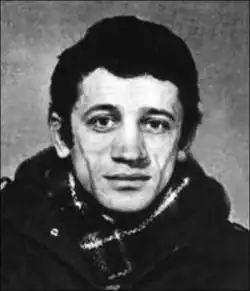
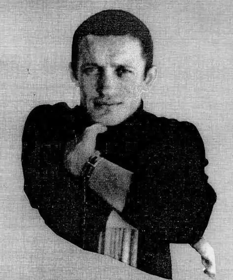
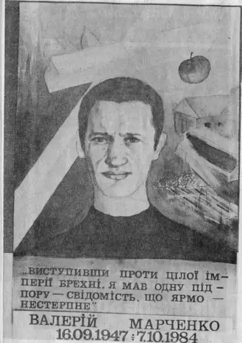
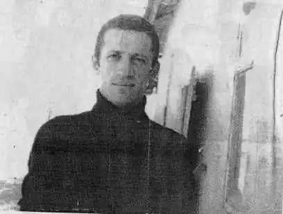
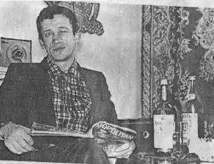
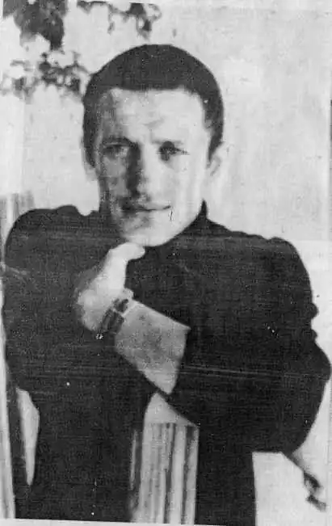
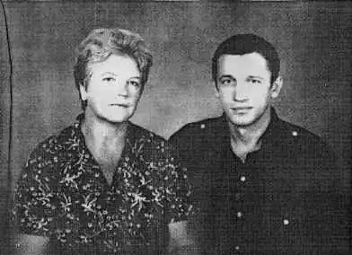
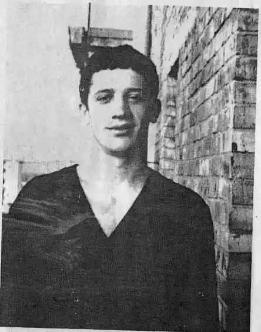
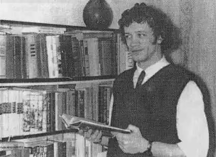

Валерій Марченко. Скарали на смерть за протидію русифікації
Він відкрито виступав проти русифікації, писав про Голодомор і висміював соціалістичний реалізм у літературі. Киянин-журналіст, схожий на французького актора Бельмондо, перекладач-філософ, учасник Української Гельсінської групи – це все про Валерія Марченка. Його з хворими нирками, за "нахабність", як сказав один зі слідчих, ув’язнили у табір суворого режиму на Уралі. Фактично прирікши на смерть.
Свій 26-й день народження київський журналіст і перекладач Валерій Марченко відзначив у камері під час слідства. Це був вересень 1973-го. Заарештували його ще влітку, а засудили в грудні на 6 років позбавлення волі в колонії суворого режиму і 2 років заслання. Чому? Не бачив сенсу в радянській літературі 70-х, де прославлялась "комуністична ортодоксія", не праця вільної людини, як-от описував Робінзона Крузо Даніель Дефо, а "рабський труд уярмленого бидла на зграю політиканів, які погрузли в пияцтві і розпусті". А ще "марним і безплідним" назвав життя лауреата Шевченківської премії радянських 70-х Миколи Нагнибіди через його "претензію на філософічність", безмежну любов до вождя і дивне перше кохання. "Виявляється, що для Нагнибіди першим коханням, чим була для Петрарки Лаура, а для Данте Беатріче, є місто Запоріжжя. Це все одно, якби хтось із нас закохався назавжди в табуретку, яку в школі витесували на уроках ручної праці", – іронізує Марченко. Журналіста обурювало те, що за зразки української літератури радянській режим виставляв "продажних митців" того часу, які писали на "правильні" теми. Ці роздуми виклав у статті "За параваном ідейності", яку написав 1972-го у Києві. Вона до друку навіть і не дійшла. Про те інкримінувалася йому в грудні як злочин перед радянською владою. "Київський діалог" Звинувачення в "антирадянській пропаганді та агітації" Марченко отримав ще за статтю "Київський діалог", яку він уже на Уралі через два роки опише як найкраще з усього, що написав до свого 25-річчя. До неї епіграфом узяв перську притчу, бо йому подобався Схід "через орієнталістику (тут і Ніцшеве "Так мовив Заратустра")" з його "всеохопною боротьбою" добра і зла. У своєму нарисі "Те, чого я не встиг сказати" з Уралу 1975-го він писав: "Переконався, що цієї незниклої непримиренности не здатна подолати жодна комуністична забезпеченість та ситість. Усвідомив, що навіть на відлюдному острові, поза соціальним оточенням і класами, індивідуум може перетворитись на втілення сатанинськости або, навпаки, людськости в найвищому її вияві". У "Київському діалозі" Валерій дискутує про русифікацію, українську мову та українську культуру зі своїм знайомим Аліком У "Київському діалозі" Валерій дискутує про русифікацію, українську мову та українську культуру зі своїм знайомим Аліком, який також виріс у Києві, але "ніяк не міг взяти втямки, навіщо потрібна боротьба за відновлення забутих традицій, поширення рідної мови (він називав це "насадженням"), зрештою, за самостійність". Валерій відстоював думку, що радянський режим цілеспрямовано не давав українській літературі, мистецтву, кіно розвиватись і робити якісний продукт. Його обурювало, що оригінали фільмів були російськими, російських копій було значно більше, до того ж, український дубляж був поганої якості, де українська мова "звучить неприродно, фальшиво Зокрема, його обурювало те, що оригінали фільмів були російськими, російських копій було значно більше, до того ж, український дубляж був поганої якості, де українська мова "звучить неприродно, фальшиво". У колонії Валерій Марченко не переходив на російську навіть зі своїми російськомовними співкамерниками, дехто з них це поважав, хоча й не переходив на українську. Родина Народився Валерій Марченко у Києві 16 вересня 1947-го року. Дідусь Валерія – Михайло Марченко, був відомим українським істориком, ректором Львівського університету, якого у 1941 році арештували за доносом. За звинуваченням у "буржуазному націоналізмі" Михайло Марченко відбув ув’язнення у Новосибірській тюрмі. Дід і мама – відомий педагог Ніна Смужаниця-Марченко – мали великий вплив на формування Валерія Марченка саме як українського інтелектуала. Заперечення більшовизму для мене норма існування. Й не мовчазною пасивністю треба йому протиставитися. Нам ніхто не допоможе, крім нас самих Пізніше вже з табору Валерій напише дідусеві листа, в якому пояснить, чому мовчати він не може, бо, як і для його діда свого часу, в імперії брехні ярмо – нестерпне: "Заперечення більшовизму для мене не відкриття, а норма існування. Й не мовчазною пасивністю треба йому протиставитися. Нам ніхто не допоможе, крім нас самих". Закінчивши філологічний факультет університету Шевченка, Валерій Марченко почав працювати у виданні "Літературна Україна", викладав у школі. Почав перекладати, зокрема з азербайджанської. "Чому переклад?" Любов до української мови прийшла з любов’ю до перекладацької роботи. "Певно, як чув на бабусине "добридень" звідусіль "добрый день" та "здравствуйте". Відшукати український відповідник останньому тоді не міг. Зате в пам’яті залишилось почуте не знати від кого "вот по-украински так не скажешь". Білінгвізм, він схиляє до роздумів", – писав Марченко у статті "Чому переклад?" (Урал, 1975 року). У колонії Валерій Марченко почав потроху перекладати з англійської "Троє в човні, не кажучи про собаку" Джером Джерома. "З того часу у мене оселився пієтизм до англійського гумору, а пам’ятна фраза Джером Джерома "Я люблю роботу. Вона просто зачаровує мене. Я годинами можу сидіти й дивитися, як хтось працює" стала моїм крилатим супутником-дороговказом у плавбі по житейському морі", – писав Валерій Марченко у листі до матері. Під час свого першого арешту у пермській колонії №35 Марченко також брався до перекладів Герберта Велса, Сомерсета Моема, Декларації Незалежності США Томаса Джефферсона. Робив це для задоволення. Переклади конфісковували, але він продовжував свою роботу. Мама – безцінний скарб і друг У пермському таборі Валерій Марченко познайомився з Семеном Глузманом та Іваном Світличним. Глузман пізніше розповість про те, з якими почуттями Валерій розповідав про матір. "Іронічний, гострий, глузливий, Валера змінювався, коли наша розмова торкалась його мами. І одного разу я зрозумів, що їхні такі ясні стосунки "мати-син" мали і зовсім інший відтінок, мною раніше ніколи не бачений, їх зв'язувала дружба", – згадував Глузман. Валерій упродовж свого перебування у колонії писав також про ув’язнених вояків УПА, засуджених ще за часів Сталіна, а також про нестерпні умови перебування в’язнів. Його постійно допитували й примушували зректись від своїх поглядів. Він не корився. "Судовий фарс, коли наклепом назвали навіть розмову про знищення радянською владою кращих українських письменників (ішлося про репресії часів культу особи Сталіна), мої ж більш ніж скупі пояснення головуюча просто уривала; відчуття гіркоти за поведінку приятелів, які белькотали щось про мої ворожі висловлювання, зустріч віч-на-віч з брутальністю конвою та псами, що охороняли мене від суспільства за намагання висловитись, – усе це справляло шокуюче, витвережувальне враження", – пояснював Марченко свою затятість у статті "Звичайний страх". Історія кохання і вирок у 10 років Валерій повернувся після заслання у Київ 1981-го. У цей же час почав листуватися з італійкою Сандрою Фапп'яно. "Говорили вони і писали один одному англійською. Для обох нерідною. Тому ці листи, на перший погляд, є кострубатими і трохи школярськими. А потім дивуєшся, як просто з нічого виникає картина любові", – писав дослідник Вахтанг Кіпіані. Валерій Марченко. Архівне фото Валерій Марченко. Архівне фото Та цю історію стосунків перервав другий арешт Марченка. За словами Семена Глузмана, через хворі нирки була "мікроскопічна можливість", що Валерій зможе поїхати на лікування за кордон. "Активісти "Міжнародної амністії" намагалися допомогти йому з Італії, Нідерландів, надсилали офіційні запрошення. Все було даремно", – писав Глузман. Дві статті, які Валерій Марченко передав для друку на Захід, потрапили до рук "кагебістів" і арешт не забарився. Я за вільну розкуту думку, я захищаю гідність людини, відстоюючи високі моральні принципи. Мені як громадянинові і чоловікові соромно за країну, де жінки тільки за переконання відбувають 25 років каторги "Перебуваючи в пермських радянських концтаборах, я зіштовхнувся з брехнею та беззаконням. Як людина вільна, тобто така, що вважає себе вільною, де і в яких умовах вона не перебувала б, я не міг мовчати і писав про те. За це мене зараз судять. Я проти брехні і облуди, беззаконня і фальші. Я за вільну розкуту думку, я захищаю гідність людини, відстоюючи високі моральні принципи як християнин, керуюся Божими заповідями. Мені як громадянинові і чоловікові соромно за мою країну, де жінки тільки за переконання відбувають 25 років каторги. За всю історію існування держав не було таких ганебних фактів", – сказав Валерій Марченко у своєму останньому слові на суді. Як "особливо небезпечного рецидивіста" Марченка засудили до 10 років таборів особливого режиму і 5 років заслання. "Можна було дати і менше, я стільки не проживу", – такими були слова Валерія після оголошення вироку. Хвороба прогресувала, і 7 жовтня 1984 року у нього відмовили нирки. Помер Валерій Марченко у 37 років у тюремній лікарні у Санкт-Петербурзі. За переказами, помираючи просив "яблучка". Мати Валерія довго добивалася можливості забрати тіло сина. Згодом Валерія перепоховали поруч із дідом – у Гатному під Києвом. "Листи до матері" На 50-річчя Ніни Марченко у 1978-му році Валерій відправив вітальну листівку. "Люба матусю! Ти – мій безцінний скарб, світло, що розсіює гнітючу темноту, МАТЕРІЯ добра, яку викликаю в уяві завжди, коли мені сумно чи боляче. Відчувати твої страждання (а я відчуваю їх, навіть якби ти надсилала чистий папір) і бути неспроможним нічим зарадити – синівський тягар не з найлегших. Але я вірю в нашу тріумфальну зустріч. Тому в День народження бажаю витримки, здоров’я і незгасності Твого оптимізму! Син", – написав він. Історію життя, творчості, любові й сподівань Валерія Марченка – його мати зібрала у книгу "Листи до матері з неволі".